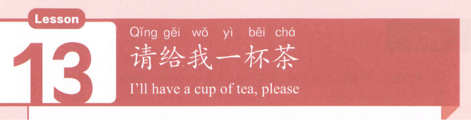
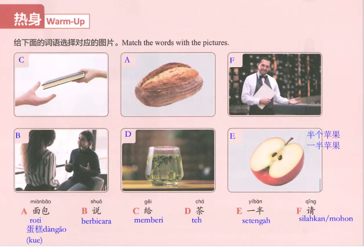
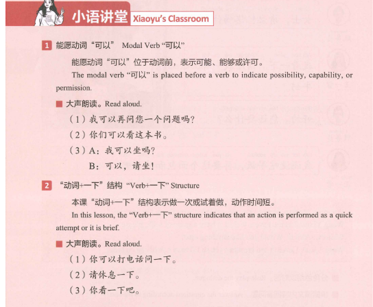
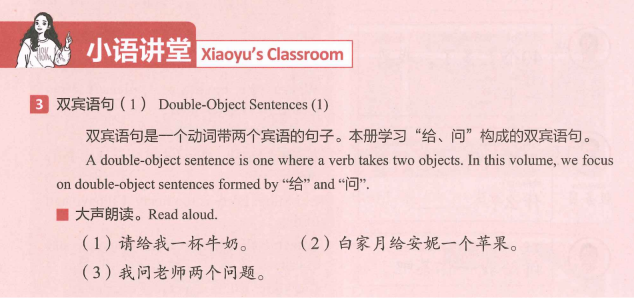
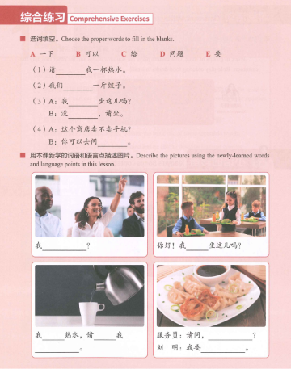

Latihan percakapan · 对话练习

Arti: "I'll have a cup of tea, please." / "Tolong beri saya secangkir teh."
Kalimat ini adalah ungkapan sopan saat memesan minuman atau meminta sesuatu:
请 (qǐng = tolong / silakan),
给 (gěi = memberi),
我 (wǒ = saya),
一杯 (yì bēi = secangkir / segelas), dan
茶 (chá = teh).

Jawaban yang tepat: C. 给 (gěi = memberi)
Penjelasan: Menampilkan seseorang yang sedang menyerahkan/memberikan sebuah buku kepada orang lain.
Jawaban yang tepat: A. 面包 (miàn bāo = roti)
Penjelasan: Menampilkan sebongkah roti panggang. Catatan tambahan: bedakan dengan 蛋糕 (dàn gāo) yang berarti kue.
Jawaban yang tepat: F. 请 (qǐng = silakan / mohon)
Penjelasan: Seorang pelayan berpakaian rapi dengan gestur tangan terbuka mempersilakan tamu masuk atau duduk.
Jawaban yang tepat: B. 说 (shuō = berbicara)
Penjelasan: Dua wanita sedang duduk berhadapan dan berkomunikasi / berbicara satu sama lain.
Jawaban yang tepat: D. 茶 (chá = teh)
Penjelasan: Segelas teh hijau seduh yang masih terlihat daun tehnya di dalam gelas bening.
Jawaban yang tepat: E. 一半 (yí bàn = setengah)
Penjelasan: Buah apel merah yang dibelah dua sehingga tersisa setengah bagian. Catatan tambahan pada gambar: dapat disebut 半个苹果 (bàn gè píngguǒ) atau 一半苹果 (yíbàn píngguǒ) = setengah buah apel.



Pilihan yang tepat: C. 给 (gěi)
👉 Kalimat utuh: 请给我一杯热水。 (Qǐng gěi wǒ yì bēi rè shuǐ.)
Arti: Tolong beri saya segelas air panas.
Pilihan yang tepat: E. 要 (yào)
👉 Kalimat utuh: 我们要一斤饺子。 (Wǒmen yào yì jīn jiǎozi.)
Arti: Kami mau / pesan satu jin pangsit (jiaozi).
Pilihan yang tepat: B. 可以 (kěyǐ) & D. 问题 (wèntí)
👉 Kalimat utuh: A：我可以坐这儿吗？ B：没问题，请坐。 (A: Wǒ kěyǐ zuò zhèr ma? B: Méi wèntí, qǐng zuò.)
Arti: A: Bolehkah saya duduk di sini? | B: Tidak masalah, silakan duduk.
Pilihan yang tepat: A. 一下 (yíxià)
👉 Kalimat utuh: A：这个商店卖不卖手机？ B：你可以去问一下。 (A: Zhège shāngdiàn mài bu mài shǒujī? B: Nǐ kěyǐ qù wèn yíxià.)
Arti: A: Apakah toko ini menjual ponsel atau tidak? | B: Kamu bisa pergi bertanya sebentar.